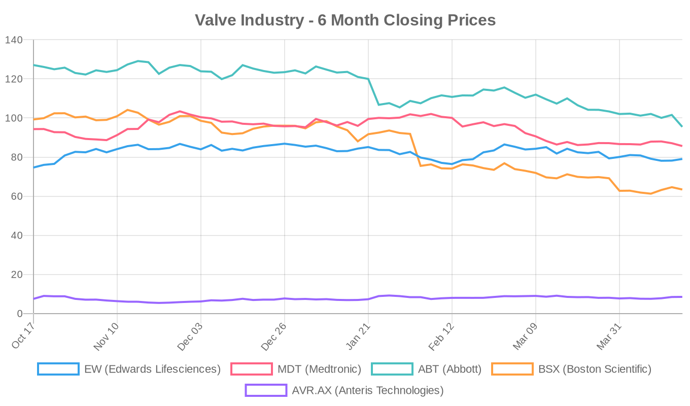
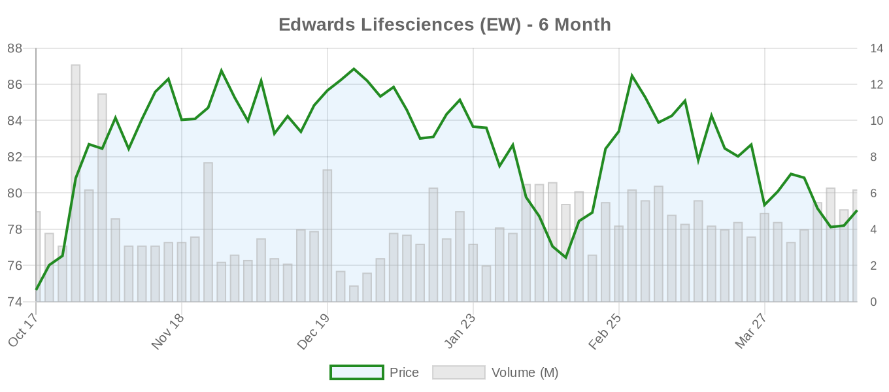
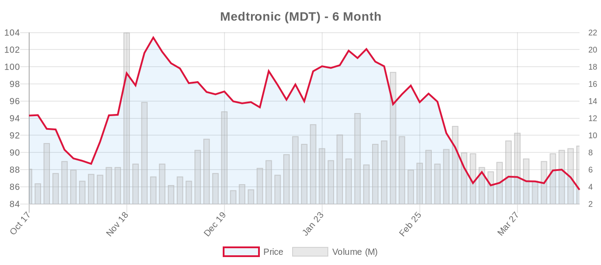
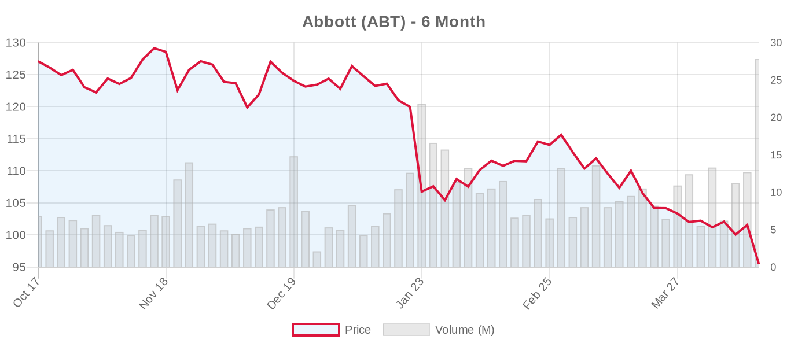
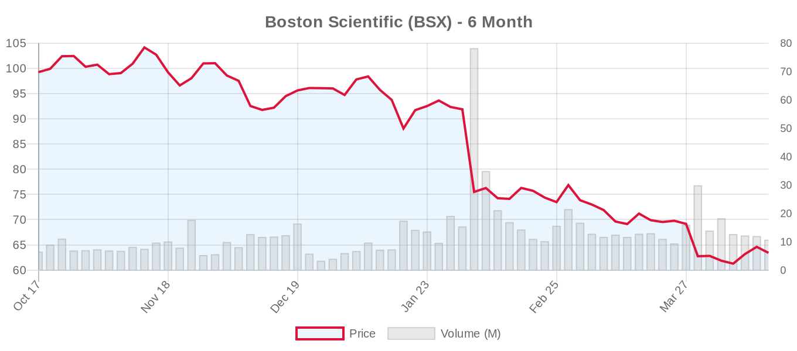

|
||||||||
|
April 17, 2026 By E. Nolan Beckett |
||||||||
|
||||||||
Executive SummaryToday's structural heart landscape is dominated by a deep dive into tricuspid valve interventions, with a special issue of Annals of Cardiothoracic Surgery delivering a half-dozen articles spanning transcatheter repair, replacement, and surgical salvage after failed transcatheter therapy. A new meta-analysis of 1,589 patients confirms that commercially available transcatheter tricuspid devices offer sustained TR reduction and symptomatic benefit at one year — but with a reminder that 30-day mortality sits at 1.8% and only two-thirds achieve moderate-or-less TR at 12 months. Meanwhile, data from the EXPANDed studies in ESC Heart Failure suggest that nearly three-quarters of patients with concomitant severe TR see meaningful tricuspid improvement after mitral TEER alone — raising important questions about optimal sequencing. And with Edwards Lifesciences reporting earnings next week, the valve industry awaits a critical read on TAVR growth trajectory amid volatile markets. For the clinical audience: today is a tricuspid day, and the emerging picture is nuanced. The meta-analysis by Ng et al. provides the best aggregate look at real-world commercial transcatheter tricuspid outcomes to date — and the numbers are encouraging but far from transformative. One-year HF hospitalization rates of 20% and TR reduction to moderate-or-less in only 66.5% of patients should temper enthusiasm, particularly as the ESC 2025 guidelines have already elevated transcatheter tricuspid therapy to Class IIa. Meanwhile, Asia-Pacific data show TTVR outperforms T-TEER for TR reduction but at the cost of substantially higher complication rates. The PANDORA registry adds important TAVR-in-TAVR data as the field grapples with lifetime valve management. And a single case report of 5-year Cardiovalve TMVR durability — while scientifically limited — is the kind of early signal the field watches closely. Read on for the full breakdown. Today's Key Findings[NOTABLE] Tricuspid Transcatheter Meta-Analysis (Annals of Cardiothoracic Surgery): The first systematic review of commercially available transcatheter tricuspid devices aggregates 1,589 patients across 13 studies. At one year: 9.9% all-cause mortality, 20.1% HF hospitalization, TR ≤moderate in 66.5%, and 81.1% in NYHA I/II. These are the real-world numbers the field needs to contextualize against the controlled trial data that drove the ESC 2025 Class IIa recommendation. Read the study → [NOTABLE] TR Prognosis After Mitral TEER — EXPANDed Studies (ESC Heart Failure): Among 160 patients with severe TR who underwent successful mitral TEER without direct tricuspid intervention, 73% improved to ≤moderate TR at 30 days, and this was sustained in 86% at one year. Larger LV dimensions and lower LVEF predicted TR improvement — suggesting that in patients with ventricular secondary MR, fixing the mitral valve may be sufficient to address concomitant TR. One-year mortality was numerically halved in the TR-improvers (12.4% vs 22.3%), though not statistically significant. Read the study → TAVR-in-TAVR Registry — PANDORA (JAHA): A 172-patient international registry examining repeat TAVR across four prosthetic valve configurations finds 91.3% technical success and 68% 30-day device success, with a sobering 7.3% 30-day mortality. The IAV-IAV (intra-annular into intra-annular) configuration showed the numerically worst 1-year outcomes. These data land squarely in the lifetime management conversation as TAVR expands to younger patients. Read the study → 5-Year Cardiovalve TMVR Follow-Up (JACC Case Reports): A single case of transfemoral TMVR with the Cardiovalve device demonstrates no MR, no valve degeneration, and NYHA Class I at 5 years. First-in-human durability data for this platform — but an N of 1 is not evidence. Read the study → Tricuspid Valve (TriClip, TTVR)Today's Annals of Cardiothoracic Surgery essentially published a tricuspid-focused special issue, and taken together, these articles paint a picture of a field in rapid maturation — with all the growing pains that entails. Meta-Analysis: Short-Term Outcomes of Commercial Transcatheter Tricuspid InterventionsNg et al. performed a systematic review and meta-analysis of 13 studies encompassing 1,589 patients (mean age 78 years) who underwent transcatheter tricuspid intervention with commercially available devices. Key findings: 30-day mortality was 1.8%, 1-year mortality was 9.9%, and HF hospitalization at 1 year was 20.1%. TR reduction to ≤moderate was achieved in 66.5% at 1 year, and 81.1% reported NYHA Class I/II status. Full text → Editorial perspective: These numbers deserve careful parsing. The 30-day mortality of 1.8% compares favorably to historical isolated surgical TV mortality (8-20%), but these are different patient populations — the transcatheter cohort is selected for anatomic suitability and likely excludes the sickest patients who might have undergone surgery in prior eras. The 66.5% TR reduction rate at 1 year is meaningfully lower than the near-universal success seen in TTVR trials (the TRISCEND II TVT Registry data showed 97.7% ≤mild TR at 30 days), suggesting this meta-analysis is dominated by TEER data where residual TR is more common. The 20% HF hospitalization rate at 1 year is a sobering reminder that TR reduction does not always translate into clinical event prevention — a tension the ESC 2025 guidelines acknowledged when granting the Class IIa recommendation based largely on QoL endpoints from TRILUMINATE and Tri.Fr. Asia-Pacific Real-World Data: T-TEER vs TTVRChan et al. report on 174 patients across four centers in Hong Kong, Taiwan, and Thailand — the largest APAC real-world transcatheter tricuspid cohort to date. TTVR patients had more severe TR (ERO 0.85 vs 0.57 cm², larger coaptation gaps) and were anatomically unsuitable for TEER. At 30 days, TTVR achieved TR ≤moderate in 100% vs 74% for T-TEER (P=0.001), but at the cost of significantly higher major adverse events (15.8% vs 2.2%), longer hospital stays (15 vs 5 days), and greater platelet decline. Both groups showed comparable symptomatic improvement. Full text → Editorial perspective: This is a classic apples-to-oranges comparison — TTVR was reserved for patients with unfavorable TEER anatomy and more severe disease — so the higher complication rate likely reflects both patient selection and the inherent invasiveness of replacement. Still, the data reinforce an emerging paradigm: TEER first for suitable anatomy, TTVR as a more definitive but higher-risk option for complex cases. The finding that combined mitral intervention was far more common in the T-TEER group (37% vs 2.6%) also highlights the evolving role of same-session dual-valve TEER. TEER in Patients with Cardiac Implantable Electronic DevicesUpadhyaya et al. provide a detailed technical primer on managing CIED leads during tricuspid TEER — a challenge affecting >30% of TR patients. The manuscript describes a structured approach including multi-site femoral venous access, stiff-wire straightening techniques for IVC alignment, steerable sheath manipulation, and commissural repositioning around leads. Full text → Editorial note: CIED-related TR is increasingly recognized as a distinct entity (as highlighted by the ESC 2025 guidelines), and the technical challenges are real — imaging shadowing, leaflet tethering, and entanglement risk during clip deployment. Leadless pacing and conduction system pacing may eventually reduce this problem at its source, but for now, these procedural workarounds are essential knowledge for the growing number of centers performing tricuspid TEER. Additional Tricuspid Content
Mitral Valve (MitraClip, PASCAL, TMVR)TR Improvement After Mitral TEER: The EXPANDed StudiesEstevez-Loureiro et al. analyzed 160 patients from the pooled EXPAND and EXPAND G4 studies who had severe TR at baseline, achieved procedural success with mitral TEER, and received no direct tricuspid intervention. At 30 days, 73% improved to ≤moderate TR. The TR-improved group had less atrial fibrillation (68% vs 89%), lower LVEF, and larger LV dimensions — consistent with the hypothesis that ventricular remodeling (and reverse remodeling after MR correction) drives TR improvement. Sustained TR reduction was seen in 86% of the ≤moderate group at one year, with significantly greater improvements in NYHA class and KCCQ scores (+30.6 points). One-year mortality was 12.4% vs 22.3% in favor of the TR-improved group (HR 1.92; P=0.16). Full text → Editorial perspective: This is a clinically important analysis that directly addresses the "MR-first or both valves?" question. The finding that lower LVEF and larger LV size predicted TR improvement is counterintuitive at first glance but makes pathophysiologic sense: these are patients whose TR is truly secondary to volume overload from the mitral lesion, and fixing the upstream problem resolves the downstream consequence. The implication for practice is significant — many of these patients might otherwise be considered for simultaneous tricuspid intervention. However, 27% did not improve at 30 days, and 45% of these eventually improved by 1 year, suggesting patience may be warranted before rushing to a second transcatheter procedure. Critically, the study was not randomized and cannot prove that TR improvement (rather than underlying disease severity) drove the mortality difference. The ESC 2025 guidelines do not yet provide firm guidance on sequencing mitral and tricuspid TEER — this study argues for a mitral-first approach in patients with ventricular etiology. 5-Year Cardiovalve TMVR Follow-UpBenetis et al. report on a 75-year-old man with ischemic MR (Carpentier IIIb) treated with transfemoral TMVR using the Cardiovalve device as part of the first-in-human study (NCT03958773). At 5 years, the patient remains in NYHA Class I with no MR, no valve degeneration, no thrombosis, and no LVOT obstruction. Full text → Editorial perspective: Let's be straightforward — this is an N-of-1 case report. It is not evidence of durability in any generalizable sense. However, in the TMVR space where long-term follow-up data are desperately scarce, any 5-year data point is watched closely by the field. The Cardiovalve device uses a transfemoral transatrial septal approach and remains in early clinical development. The TMVR landscape continues to be defined by the Medtronic Intrepid (still enrolling its pivotal trial, NCT03242642) and the Edwards SAPIEN M3 and EVOQUE Eos platforms. None has yet produced the kind of randomized controlled trial data that would shift guidelines. For now, TMVR remains a bridge for patients who cannot undergo surgery or achieve adequate TEER results — not a replacement for established approaches. Aortic Valve (TAVR/TAVI)TAVR-in-TAVR: The PANDORA International RegistryPopolo Rubbio et al. present the PANDORA registry — 172 TAVR-in-TAVR cases identified among approximately 30,000 TAVR procedures (0.6% repeat rate) from an international multicenter registry spanning 2011-2024. The median interval between index and redo TAVR was 1,401 days (~3.8 years). Patients were stratified into four configurations: supra-annular into intra-annular (SAV-IAV, n=32), SAV-SAV (n=29), IAV-SAV (n=74), and IAV-IAV (n=37). Structural valve deterioration was the leading failure mechanism (77.9%). Technical success was 91.3%, but 30-day device success was only 68% — largely driven by elevated residual gradients (≥20 mmHg in 12.7%) and a concerning 7.3% 30-day mortality. At 1 year, the IAV-IAV configuration showed the numerically lowest freedom from death and HF hospitalization (76.1%). Full text → Editorial perspective: This is essential reading for anyone involved in lifetime valve management — a topic the ESC 2025 guidelines emphasized heavily. Several observations deserve attention. First, the 7.3% 30-day mortality for TAVR-in-TAVR is substantially higher than index TAVR mortality in contemporary series (typically 1-3%), underscoring that redo procedures carry real risk. Second, the 68% device success rate reflects the hemodynamic challenge of placing a valve within a valve — patient-prosthesis mismatch and elevated gradients are predictable consequences, particularly in smaller annuli. Third, the finding that IAV-IAV performed worst aligns with theoretical concerns about stacking balloon-expandable frames within each other, which compounds the PPM problem. The ESC 2025 guidelines explicitly recommend considering future valve-in-valve feasibility at the index procedure, including CT-based planning for coronary re-access and neo-skirt height. This registry provides the data to back that recommendation. As Bowdish and others have argued, the enthusiasm for TAVR in younger patients must be tempered by honest accounting of the reintervention burden — and these data show that burden is nontrivial. Myval THV: Real-World Kazakhstan DataMussayev et al. report a single-center retrospective analysis of 100 consecutive Myval THV implantations in Kazakhstan. Mean age was 70.9 years, mean STS-PROM 2.88%. Technical and device success were 95%. Two strokes occurred, 15 patients required permanent pacemakers (15%), and no deaths or life-threatening bleeding events occurred at 30 days. Hemodynamic outcomes were favorable with significant gradient reduction and improvement in AVA. Full text → Editorial perspective: The Myval platform (Meril Life Sciences, India) continues to accumulate global real-world data following the LANDMARK trial's demonstration of noninferiority to SAPIEN and Evolut at 1 year. The 15% pacemaker rate here is on the higher end of contemporary TAVR series and worth noting, though single-center data with 100 patients are hypothesis-generating at best. This adds to the growing evidence base for the Myval as a viable option, particularly in price-sensitive markets where its cost advantage is significant. Meril remains a private company. Surgical vs. Transcatheter ComparisonsNo new direct head-to-head surgical vs. transcatheter comparative studies were published today. However, two articles deserve mention in this context:
The de Waha et al. review on lifetime management of tricuspid disease explicitly advocates for a multidisciplinary framework that considers both surgical and transcatheter options sequentially over a patient's lifetime, reinforcing the ESC 2025 guidelines' emphasis on Heart Team decision-making for tricuspid disease. Industry & MarketBoston Scientific plans $88.5M R&D expansion in Ireland. The company announced a significant investment in its Irish operations, expanding research and development capabilities. While the announcement does not specify structural heart as the focus, BSX's growing WATCHMAN, ACURATE neo2, and PASCAL platforms all benefit from expanded R&D infrastructure. This comes as BSX prepares to report Q1 earnings on April 22. Source: MedTech Dive → Edwards Lifesciences earnings call scheduled for April 23. EW will report Q1 2026 results next Wednesday — a pivotal readout for the structural heart sector. Consensus estimates point to $0.73 EPS on $1.60B revenue. The call will provide critical commentary on TAVR volume trends (particularly in light of the ESC 2025 guideline expansion to age ≥70), PASCAL adoption for mitral and tricuspid TEER, and the EVOQUE tricuspid replacement program. Source: Business Wire → Independence Health System celebrates cardiovascular milestones. The Pennsylvania health system highlighted achievements in cardiovascular medicine, though specific structural heart details were not available from the summary. Source: exploreJefferson → Bengaluru emerges as cardiac care hub. India's tech capital is seeing growth in advanced cardiac services, reflecting broader expansion of structural heart capabilities in South Asia. Source: The New Indian Express → Financial AnalysisThe structural heart sector is navigating an increasingly bifurcated market environment heading into a critical earnings week. Edwards Lifesciences, the pure-play structural heart company, has been the relative outperformer — up 5.9% over six months — while the diversified medtech giants have been hit hard. Abbott's dramatic 6% single-day decline today (closing at $95.47) pushed its 6-month loss to nearly 25%, and Boston Scientific has shed 36% over the same period. These broad-based declines likely reflect macroeconomic and tariff-related headwinds rather than structural heart-specific concerns, but they create a fascinating setup: if EW's earnings next Wednesday show robust TAVR and transcatheter mitral/tricuspid growth, the relative valuation argument for the pure-play structural heart name strengthens considerably. The institutional activity around Edwards is notable. Fisher Funds Management decreased its EW position while Lbp Am Sa added 107,330 shares — classic portfolio rebalancing ahead of earnings. TD Cowen maintained its Buy rating with a $97 price target, implying ~23% upside from today's close. The consensus target of $96.33 across 27 analysts represents significant perceived upside, but the forward P/E of 23.8x (vs trailing 43.7x) tells the story: the Street is pricing in meaningful earnings growth that must materialize. Boston Scientific's $88.5M R&D expansion in Ireland signals long-term commitment to growth, but the stock has been punished ahead of its April 22 earnings report. At $63.42, it trades 42% below its 52-week high of $109.50, creating a valuation disconnect with its strong_buy consensus rating and $96.66 target price. For the structural heart segment specifically, investors will be watching PASCAL TEER volumes and ACURATE neo2 TAVR adoption in Europe. Medtronic continues its steady decline (-9.2% over 6 months), trading at $85.65 with earnings not until June. The Intrepid TMVR pivotal trial (still enrolling, 1,056 patients) and Evolut TAVR franchise remain key value drivers, but the company's diversified portfolio means structural heart is a smaller part of the story. Anteris Technologies (AVR.AX), the small-cap TAVR innovator, is flat today at A$8.50 but up 14% over six months — a speculative bet on its DurAVR single-piece tissue valve platform that remains pre-revenue. Valve Industry Stocks Edwards Lifesciences (EW)
Edwards outperformed competitors on a tough trading day, gaining 1.09% while most medtech peers fell. The stock is the sector's relative safe haven heading into next week's earnings call — the single most important near-term catalyst for the structural heart industry. TD Cowen maintained its Buy with a $97 target. Key questions for the call: SAPIEN platform volume trends in the wake of ESC 2025 TAVI age threshold expansion, PASCAL uptake for mitral and tricuspid TEER, and EVOQUE tricuspid replacement commercial trajectory. The forward P/E of 23.8x reflects meaningful growth expectations. Medtronic (MDT)
Medtronic continues its downtrend, now 19.4% below its 52-week high. The structural heart segment — anchored by the Evolut TAVR platform and the Intrepid TMVR program — remains a growth engine, but the company's broad diversification means macro headwinds in other segments weigh on the stock. The Evolut Low Risk long-term follow-up trial (NCT02701283) remains active and will provide critical durability data. Forward P/E of 14.1x makes MDT the cheapest large-cap in the group. Abbott (ABT)
Abbott's 6% single-day plunge is the headline of the day in medtech — the stock hit a new 52-week low at $93.92 before recovering slightly. The structural heart portfolio (MitraClip/TriClip TEER, Navitor TAVR) is performing well clinically, but broader company headwinds are overwhelming segment-specific performance. The MitraClip and TriClip systems are the dominant TEER platforms globally, and today's EXPANDed and tricuspid TEER studies all used Abbott devices. The TRILUMINATE pivotal (NCT03904147) and COAPT long-term (NCT03706833) trials remain active and are key value drivers. The Navitor TAVR global investigation (NCT04788888) is active but not yet recruiting additional patients. At $95.47, ABT is 33% below analyst consensus — the widest gap in the group. Boston Scientific (BSX)
Boston Scientific has been the hardest-hit among valve industry stocks, down 36% over six months despite a Strong Buy consensus from 32 analysts. The $88.5M Ireland R&D expansion signals confidence in long-term growth, but the stock needs a strong Q1 earnings report on April 22 to stabilize. The PASCAL platform (CLASP II TR trial for tricuspid TEER, NCT04097145, still recruiting) and ACURATE neo2 TAVR system are the structural heart catalysts. BSX's structural heart segment is smaller than EW's or ABT's, but it's the fastest-growing area of the company. Anteris Technologies (AVR.AX)
Anteris remains a speculative play on its DurAVR single-piece ADAPT-treated tissue TAVR valve, which aims to deliver superior hemodynamics and durability through a biomimetic leaflet design. The stock is up ~14% over six months, outperforming all large-cap peers, but with a market cap under A$1B and no revenue, this is a venture-stage investment. Clinical data will be the catalyst. Private Companies: JenaValve Technology (aortic regurgitation TAVR), J Valve Technology, and Meril Life Sciences (Myval THV, featured in today's Kazakhstan data) remain private with no public stock data available. Market outlook: The coming week is pivotal for the structural heart sector. Boston Scientific reports April 22 and Edwards Lifesciences on April 23 — back-to-back earnings that will set the narrative for Q2. The wide gap between current prices and analyst targets (33% for ABT, 52% for BSX, 22% for EW) reflects either a massive buying opportunity or a market that is repricing growth expectations downward. For the structural heart sector specifically, the ESC 2025 guideline expansion for TAVR (age ≥70 threshold) and the new Class IIa recommendation for transcatheter tricuspid therapy should be addressable market tailwinds — but translating guideline changes to procedure volume takes time, and reimbursement remains the rate-limiting step in many geographies. Clinical Trial UpdatesAortic Valve Trials
Mitral Valve Repair Trials
Mitral Valve Replacement Trials
Tricuspid Valve Repair Trials
Tricuspid Valve Replacement Trials
Other Relevant Trials
Device & TechnologyThe Cardiovalve TMVR 5-year follow-up (discussed above) represents the longest reported durability data for this transfemoral mitral replacement platform. Additionally, the PANDORA registry's detailed analysis of supra-annular vs intra-annular TAVR configurations for repeat procedures provides the kind of device-specific intelligence that will inform valve selection at the index procedure. The finding that SAV-IAV (e.g., CoreValve/Evolut followed by SAPIEN) configurations showed numerically best technical success, while IAV-IAV (e.g., SAPIEN followed by SAPIEN) showed worst 1-year outcomes, is an early signal that could influence initial valve choice in younger patients where redo probability is highest. The new Hydra THV vs balloon-expandable valve-in-valve trial (NCT07524595) also signals a growing competitive landscape in the valve-in-valve space, where supra-annular self-expanding designs may have a hemodynamic advantage for small failed surgical bioprostheses. Looking ahead: All eyes turn to earnings week — Boston Scientific reports April 22 and Edwards Lifesciences April 23. These back-to-back readouts will provide the first post-ESC 2025 guideline window into how the expanded TAVR and transcatheter tricuspid recommendations are translating into procedure volumes and revenue. Meanwhile, today's tricuspid data dump reinforces that we're firmly in the growth phase of transcatheter TR therapy — but the gap between near-universal TR reduction in replacement trials and the 66.5% success rate in this real-world meta-analysis is a reminder that trial results and clinical reality don't always converge neatly. The field needs more data, longer follow-up, and — critically — better patient selection tools. — E. Nolan Beckett | The Valve Wire |
||||||||
|
|
||||||||
|
||||||||
|